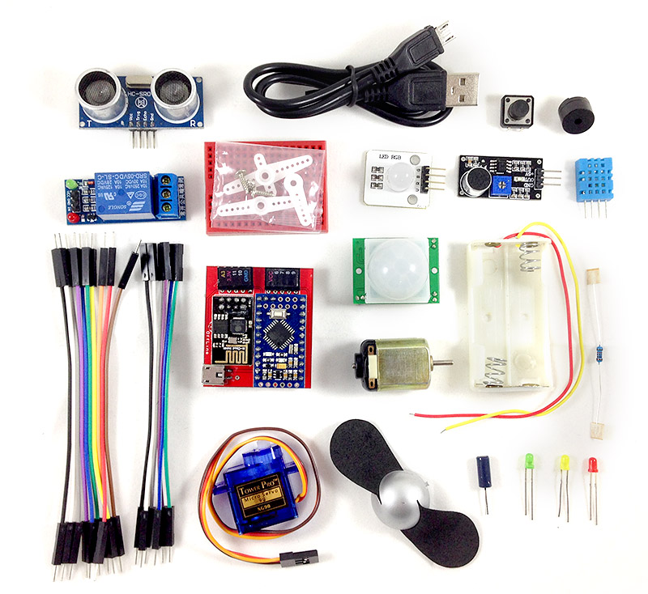

Webduino Advanced Kit
Webduino Advanced Kit includes the key items you'll need to complete the more advanced project examples. Webduino Advanced Kit, couple with the rich project examples on the official website, will help you build your IoT project more creative, innovative, and favorable!
Price
US$ 58.99
Please send inquiries by email service@webduino.io or call +886-7-3388511.
This Kit includes:
- 1. Webduino Mark 1 *1
- 2. PIR Sensor *1
- 3. DHT Sensor *1
- 4. Sound Sensor *1
- 5. Buzzer *1
- 6. Relay *1
- 7. Fan Motor *1
- 8. Shake Switch *1
- 9. Ultrasonic Sensor *1
- 10. Servo Motor *1
- 11. Servo Motor Gear *1
- 12. RGB LED *1
- 13. LEDs *3
- 14. Button Switch *1
- 15. 1k Resistor *1
- 16. Breadboard *1
Input Range of Power Supply:
5~6V，1~2A
Product Images:

Before You Use:
The most important thing before you begin using the Webduino is setting up the Wi-Fi. The purpose of the setup is to make the Webduino Development boards connect to the internet automatically. Please check the tutorials as follows: Webduino Board Wi-Fi Setup.